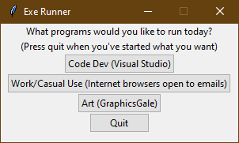

Computer Process Automation Using Python

Perhaps the title makes this sound much more interesting than it is, but I just wanted a cool way to skip a few steps every morning when I sign on to my computer, so I created a python code that automatically runs when I sign in to my computer daily. This code pops up a window that allows you to automatically open a few things when you start your computer. For me I chose the 3 buttons to be Dev Tools, Web Browser Tools, and Art tools. The web browser when it opens also immediately opens my emails and my work schedule, so that helps me stay very organized, as I have no choice but to immediately look in the morning. Source Code below (Updated 5/20/21):
Results of project: Learned a bit about the two python libraries I used, learned more about how to attach more starting processes to my OS's startup, will likely add to this later as a sort of, make my life more convenient code.
Data Sorting Algorithms Visualized
A useful tool for visualizing the differences in sorting algorithms based on how they travel, how long they take, and how many instructions (Comparisons and Swaps) they call. Temporarily finished. Still To Do: Merge sort, and actually visualizing Quick Sort (Right now it steps out of the coroutine, so I can't really delay it properly). Source code is below Updated (5/05/21):
Results of project: This project helped me learn various sorting methods that I had not yet learned about in college. Turns out however, all sorting algorithms pale in comparison to quicksort, as quicksort takes less instructions and time to solve significantly than all others. However, insert sort is significantly an easier and smaller implementation than quicksort, so if you have limited code space, quick sort may not be the way to go. Testing on this program is best between 30-70 generated squares, as its quick enough to not bore you, but not too small to be insignificant. Note: There is an added delay to each code's execution time for the visual aspect of the sorting algorithm, this intentional slowdown allows the user to actually see the colored bars travel, at the cost of accurate data.
This Website!
Results of project: This website. I initially just wanted a portfolio as a way to get my name out there, so I was going to use some website builder like WordPress or Squarespace, but then I figured, what better time than now to pick up and learn html, css, php, and a bit of javascript. While I am not the best artist of all time, this website was built more for function than form, but I have put in a few details that spiced up the experience so it was not too mundane to browse and look at, IE the jiggling letters on the home page. I would then link the source code below, but that feels pointless, as it is all entirely visible from inspect element (Updated 5/20/21).
Summary of myself
I am a 21 year old Computer Science and Applied Mathematics major at the Missouri University of Science and Technology. I am interested in front end development, game development, and programming related to statistics and mathematics, such as linear programming. I am looking for a intership or co-op position that will enable me to demonstrate my skills in the field, and my willingness to learn, work, and adapt in the real world.
Coding Languages
By far my favorite coding language to work in is C#, and outside of my portfolio, which consists of finished projects, I have made many small applications using Unity's Game Engine which runs in C#. Other languages I am a fan of include, C/C++/Java as they are all similar to C#, and Python.
My Passions
My favorite things to work on right now are this site, as HTML/CSS/Javascript are all very interesting to learn, and game development, as the only thing more fun than playing a good game, is trying to create one. I am also working on art as a skill, as it ties in very well to game development, and expressing myself creatively is always fun.
My Pets
These are mostly example posts just to fully flesh out my website, but as to make it more genuine, they will not be made up and pointless. Here are my two guinea pigs who provide me the utmost joy at the moment. Revel in their glory. On the left is Willow, who always likes to misbehave, and on the right is Oliver, who is reserved and shy. Their personalities are very opposite when interacting with people, but when it comes to food they both know very well how to beg and look cute doing it. While they currently live with my girlfriend, as my apartment in Rolla does not allow pets I am very excited to see them over the summer back in Saint Louis!